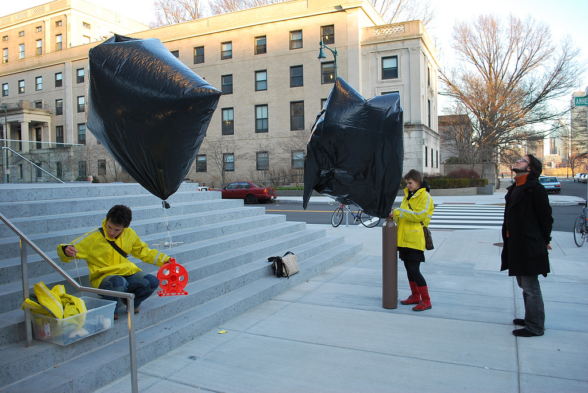

Helium is a limited and non-renewable resource, and obtaining it in the quantities necessary for aerial photography can prove challenging in the more remote parts of the world. 250 cubic foot tanks are most common, but are too heavy to carry without a wheeled dolly, and do not easily fit into cars or buses. They are also excessive, providing enough helium for between six and ten flights with a typical payload. If available, 80 or 120 cubic foot tanks are preferable, typically available in the United States for approximately $45 and $60, respectively. Those constructed from aluminum are especially convenient, being far lighter and easier to transport. Costs vary, depending on the distance from major helium sources such as the United States and Russia, but I have found large, 250 cubic foot tanks available for rental at approximately $250 each in Bethlehem, in the West Bank, and for approximately $300 in Lima, Peru, both at party stores. Gas supply vendors may offer somewhat lower prices, but sometimes require a permanent customer account, and can be reluctant to rent to non-industrial customers.
| r0.5

|
To further reduce costs, it is possible to use large high density polyethelene trash bags, of the kind typical worldwide. Two extra-large ninety-nine gallon bags suffice to lift a small camera and string to thousands of feet. Bags may be sealed shut with tape and filled without modification, or cut open and reassembled into tetrahedral shapes to minimize the surface area to volume ratio, providing greater lift. In addition, trash bags may be left inflated for several days without stretching or damaging the plastic, unlike latex balloons. However, helium leaks slowly through the plastic, and even relatively thick 2.7 mil plastic bags will lose most of their lifting power after a day or two. Trash bags are available for less than a dollar anywhere in the world, as is the clear plastic packing tape which may be used to seal them closed.